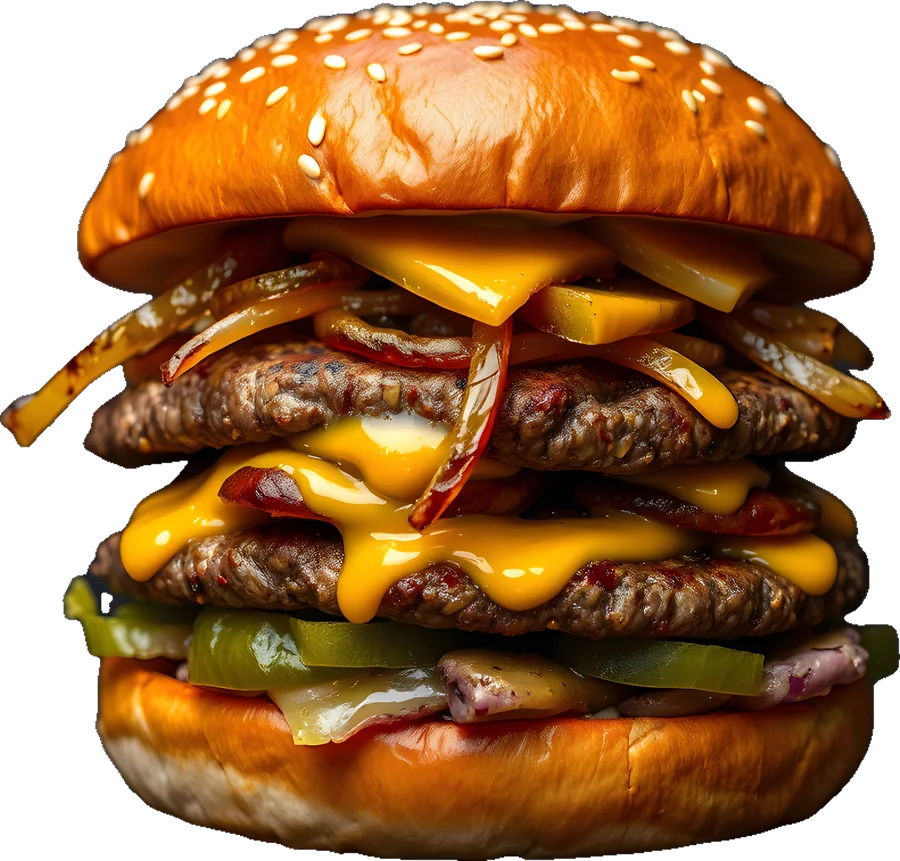
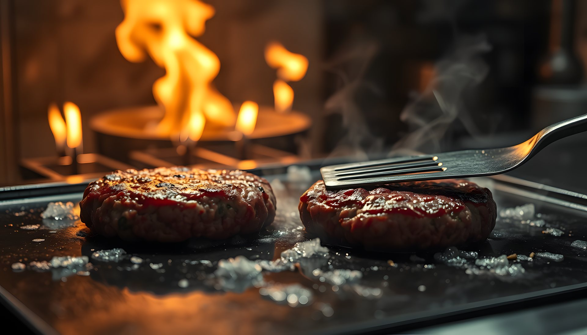
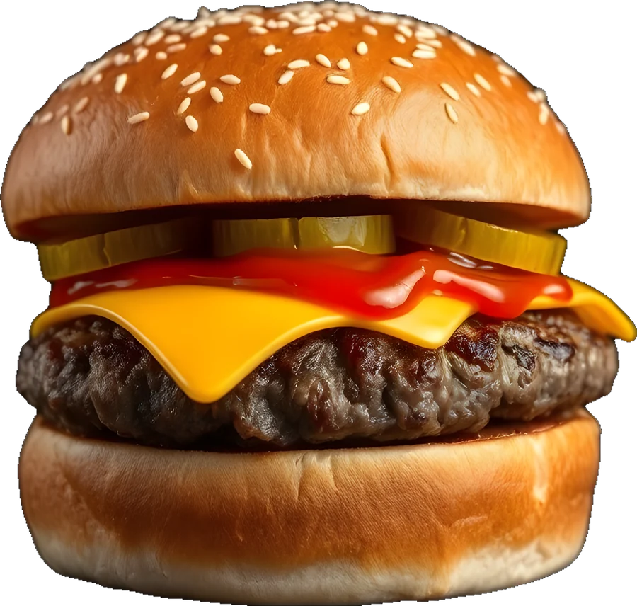
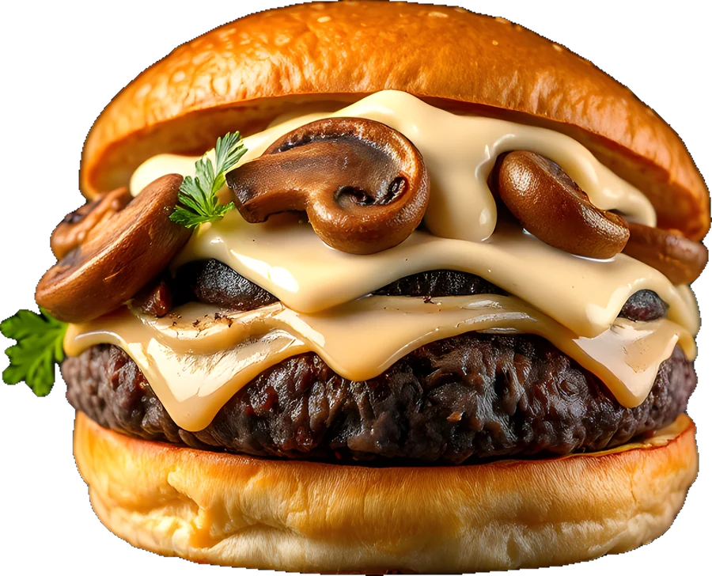
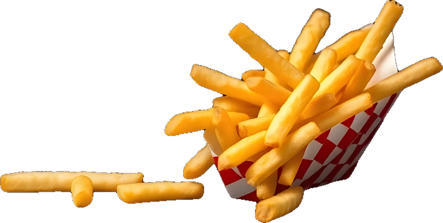
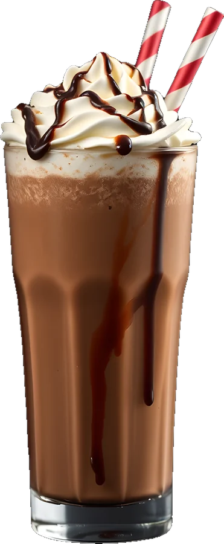
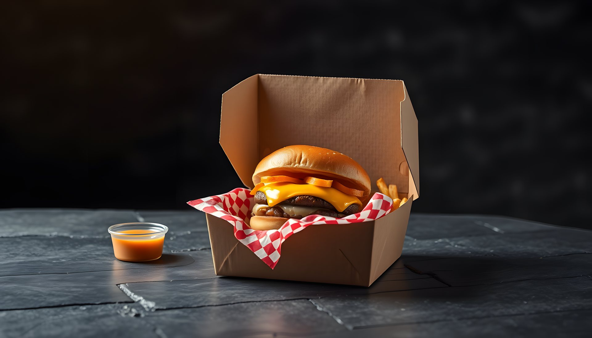
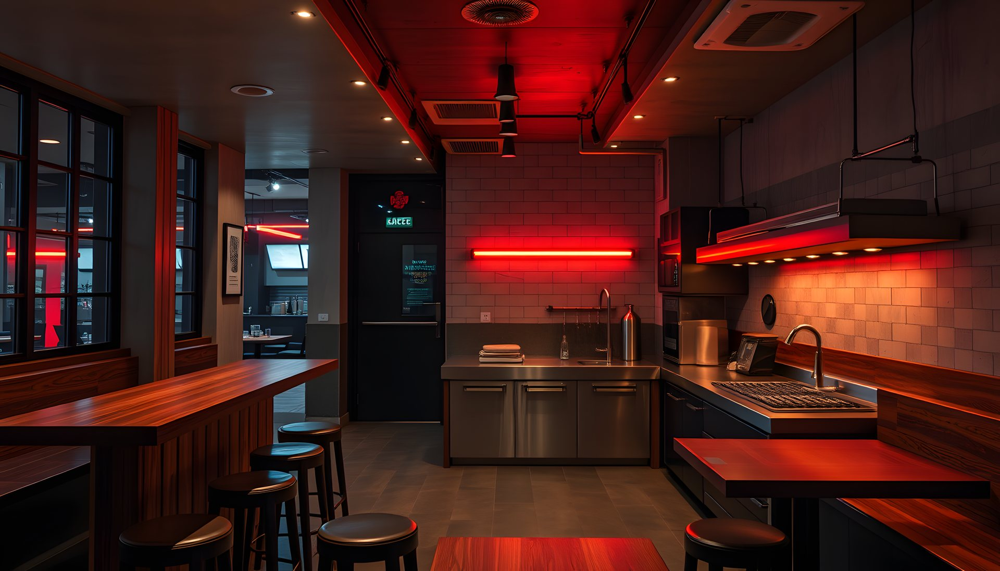

Çift smash
2 × 90 g köfte, çift cheddar, karamelize soğan, turşu, KATMAN sos.
390 ₺Sipariş
Sacda basılmış iki köfte. Altı katman. Tek ısırık.


Köfteler her sabah dana döş ve kaburgadan çekilir. Ekmekler 06:00'da fırından çıkar.
2 × 90 g köfte, çift cheddar, karamelize soğan, turşu, KATMAN sos.

02Tek köfte, cheddar, turşu, ketçap.

03Sote mantar, İsviçre peyniri, trüf mayonez.
 04
04Çıtır tavuk göğsü, lahana salatası, acı mayo.

05Çift kızartma, deniz tuzu. Yanında KATMAN sos.

06Belçika çikolatası, krem şanti.
Fiyatlar örnektir
Katmanları seç, burgerin gözünün önünde yükselsin. Siparişte bu kombinasyonu söylemen yeterli.

Kendi kuryemizle, 30 dakika içinde. Köfteler kutuya girmeden 60 saniye önce sacdan iner.

Açık mutfağa bakan 12 bar taburesi, 8 masa. Hafta sonu akşamları için rezervasyon öneriyoruz.